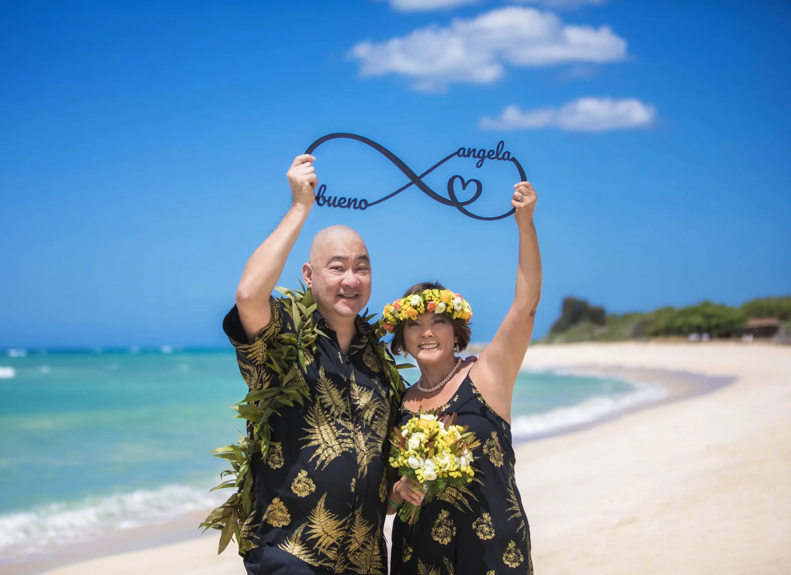
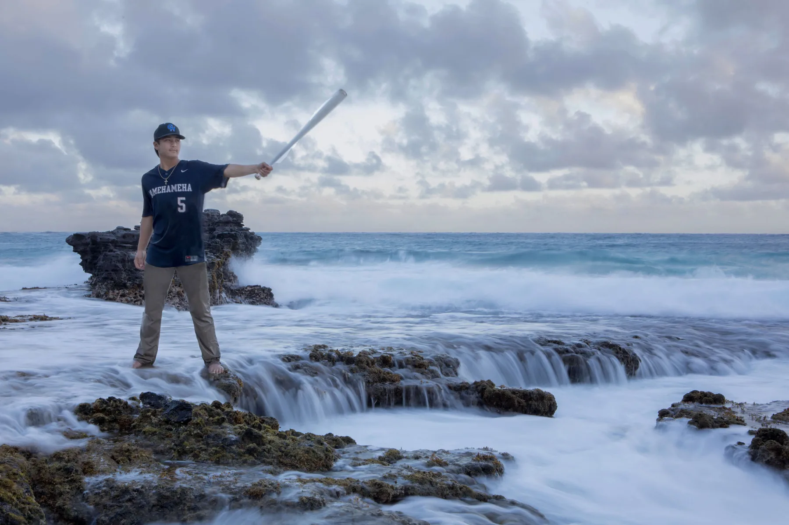
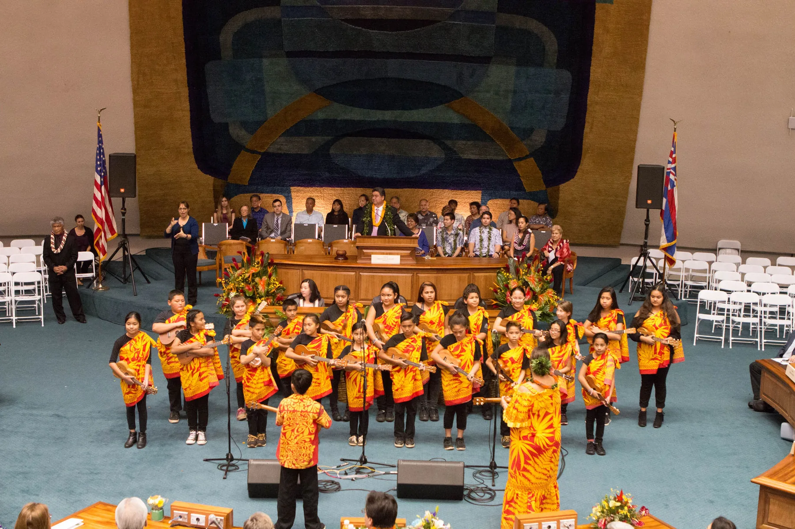

Serving Oʻahu
Photographs that feel like your family.
Natural family, portrait and celebration photography that preserves the people and moments you never want to forget.

Aloha, I’m Jaja
Real connection. Beautifully remembered.
I photograph families, couples and meaningful celebrations throughout Oʻahu.
My love for photography began in high school and drew me back behind the camera in 2014. Since then, experience, creative community and a genuine love for people have shaped the way I photograph: with warmth, patience and an eye for the moments that feel true.
Let’s capture this season.
Meet JajaWays to work together
Sessions built around your story.
From everyday family connection to once-in-a-lifetime celebrations, every session begins with getting to know what matters to you.


Portraits & Seniors
Confident, personality-filled portraits for meaningful milestones.
Explore sessions
Events & Intimate Weddings
Story-driven coverage for gatherings and weddings up to 50 guests.
Explore sessionsFeatured work
Moments with movement, warmth and heart.
Every gallery is a collection of real expressions, small gestures and the in-between moments that make an experience yours.
Explore the complete portfolioThe experience
Simple from first hello to final gallery.
Let’s connect
Share what you are celebrating, who will be photographed and the timeframe you have in mind.
Plan together
Jaja will follow up about availability, pricing and the details needed to shape your session.
Be in the moment
Arrive ready to enjoy your people while Jaja captures the connection, movement and joy.
Good to know
Frequently asked questions.
Sessions take place on Oʻahu. Share the location or setting you have in mind when you inquire, and Jaja will follow up about the details.
Use the inquiry form to request current pricing and availability for the type of session you are planning.
No. The form begins the conversation. Your date is not confirmed until Jaja responds and the booking steps are completed.
Jaja photographs families, maternity, couples, engagements, seniors, individual portraits, seasonal sessions, events and intimate weddings.

Your people. Your season. Your story.